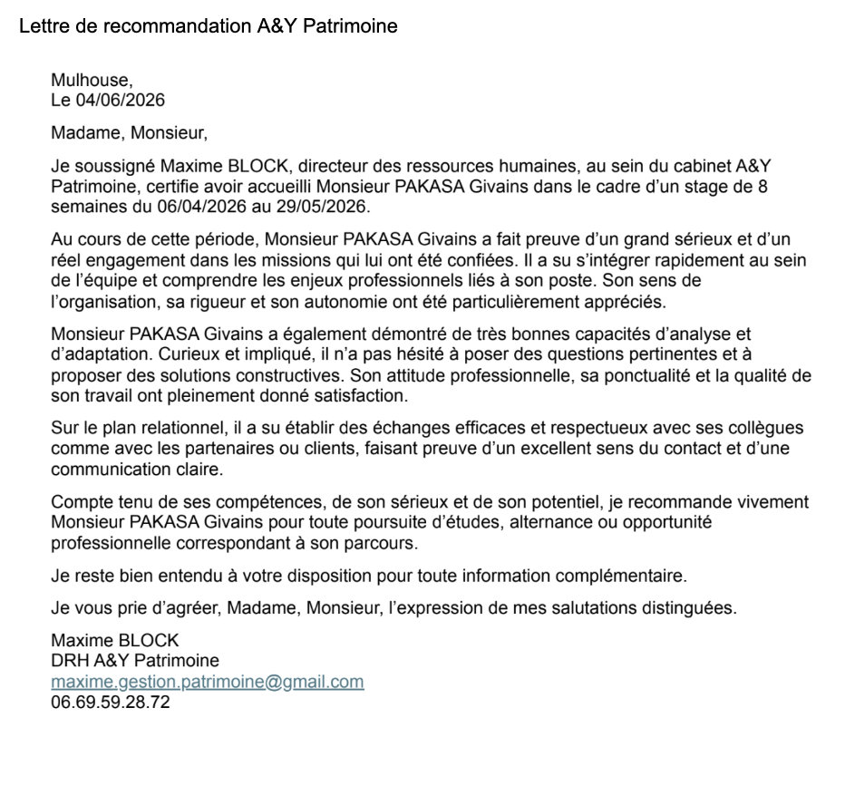

Mes missions
- Analyse patrimoniale. J’ai participé à l’audit patrimonial et à l’analyse financière des clients, notamment autour de leurs projets immobiliers.
- Prospection commerciale. J’ai contacté des entreprises par e-mail et par téléphone pour leur proposer des webinaires gratuits d’éducation financière (retraite, inflation, préparation d’un achat immobilier…), en suivant l’avancement de mes actions dans un CRM.
- Suivi des dossiers clients. J’ai préparé des dossiers clients et contribué au renforcement de la conformité documentaire.
Ce stage m’a montré qu’un projet immobilier s’inscrit souvent dans une réflexion patrimoniale plus large (financement, fiscalité, épargne) : un regard utile pour accompagner demain des acquéreurs ou des investisseurs.
Lettre de recommandation
« Compte tenu de ses compétences, de son sérieux et de son potentiel, je recommande vivement Monsieur PAKASA Givains pour toute poursuite d’études, alternance ou opportunité professionnelle correspondant à son parcours. »
Maxime Block, directeur des ressources humaines, A&Y Patrimoine

Ouvrir la lettre en grand ↗